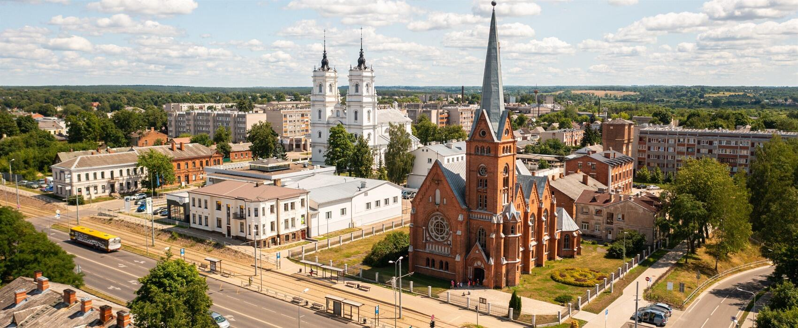

About Daugavpils

Daugavpils is the second largest Latvian city, it is located on the banks of the river Daugava (Zapadnaja Dvina), in the southeastern part of the Republic, 232 km away from the capital Riga. The city has changed its name many times: Dinaburg (1275), Borisoglebsk (1656-1667), Dvinsk (1893-1920), Daugavpils – since 1920.
Daugavpils is a city at the historic crossroads of the European Union, known as the Eastern Gateway. It has preserved its heritage as a multi-ethnic and multi-confessional city centre, but has developed as a modern, European city and has become the main industrial, educational and cultural support of Latgale.
The Historical Centre of Daugavpils City is the greatest attraction of the city and one of the most successful examples of balancing the aspects of ancient and modern times. Daugavpils is one of the few cities in Latvia which can pride itself on a unified ensemble of both classic and eclectic styles. The cultural heritage comprised of architectural, artistic, industrial and historical monuments combined with the picturesque surroundings create the essence of Daugavpils image and endow it with a special charm.
Today Daugavpils is an important centre of culture, education, sports and leisure. Daugavpils University, several branches of Riga higher education institutions, 5 vocational education institutions, and 13 comprehensive schools are located in Daugavpils.